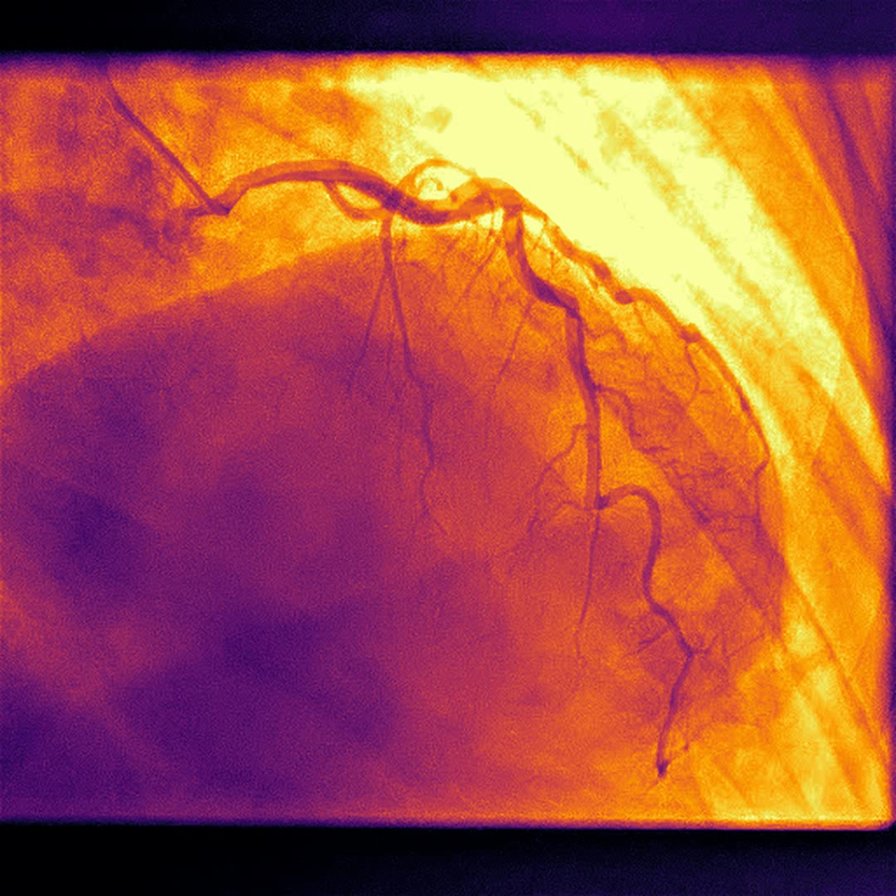

A Doppelganger performance
die>com
A live audiovisual performance for two projectors, built entirely from anonymized medical imaging.

com — a coronary angiogram rendered as glowing vessels, from the Doppelganger performance">die>com
die>com is a live audiovisual performance for two projectors, built entirely from anonymized medical imaging: the body turned into a file, and the file turned back into a body on the wall.
The name reads three ways at once: DICOM, the format every hospital scan is saved in; die, as in mortality; and .com, the body as a product, a data stream, a domain. The material is real: every trace of identity is stripped (no name, no date) so what remains is simply a body, anyone's body.
The imagery moves through a small set of treatments: the body as a white wireframe drawn on black; arteries glowing like circuitry; contrast dye blooming in feedback trails like ink in water; the whole thing occasionally stuttering into glitch and the flat light of a diagnostic monitor. Niels Poensgen builds the audio from the material itself: sections of sound distorted and scattered in time, driven by the images' own motion, with a heartbeat that periodically flatlines into drone.
die>com is fully self-equipped and scales to the surface it is given: a club wall, a façade, a screen. Duration 30–60 minutes, adaptable, and it can be built to a specific room or act if the festival's venue matching pairs us with one.
CONTACT
For bookings, collaborations, and inquiries:
info@doppelganger.mov